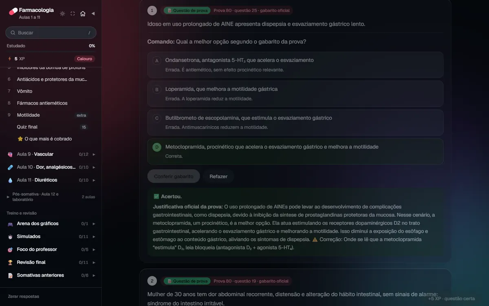
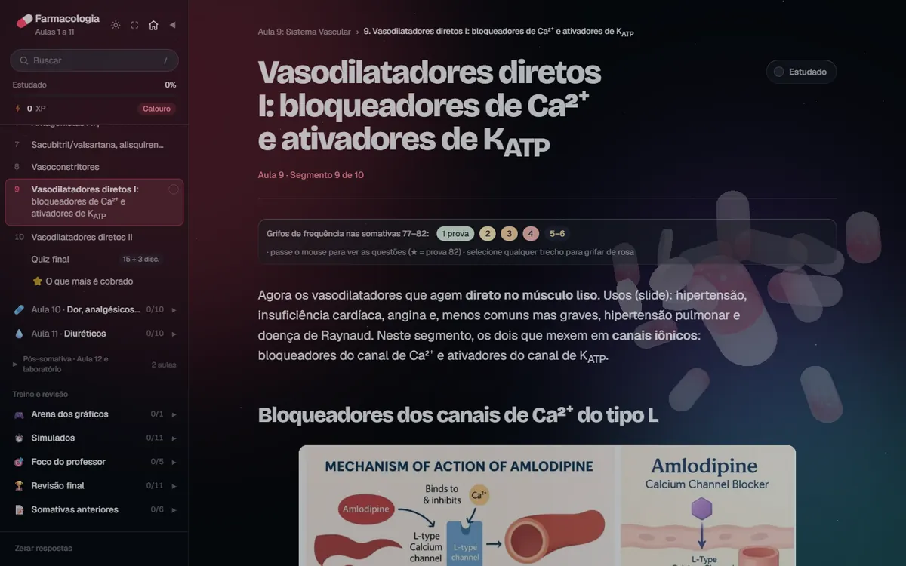
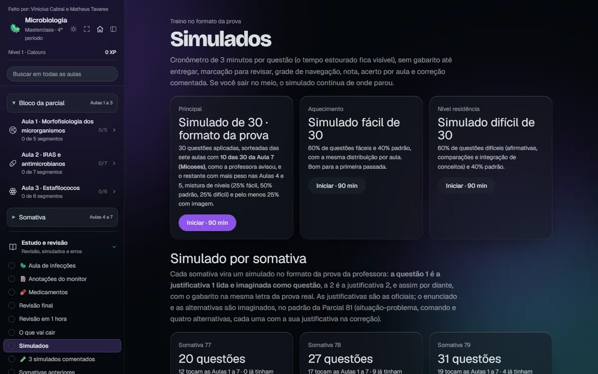
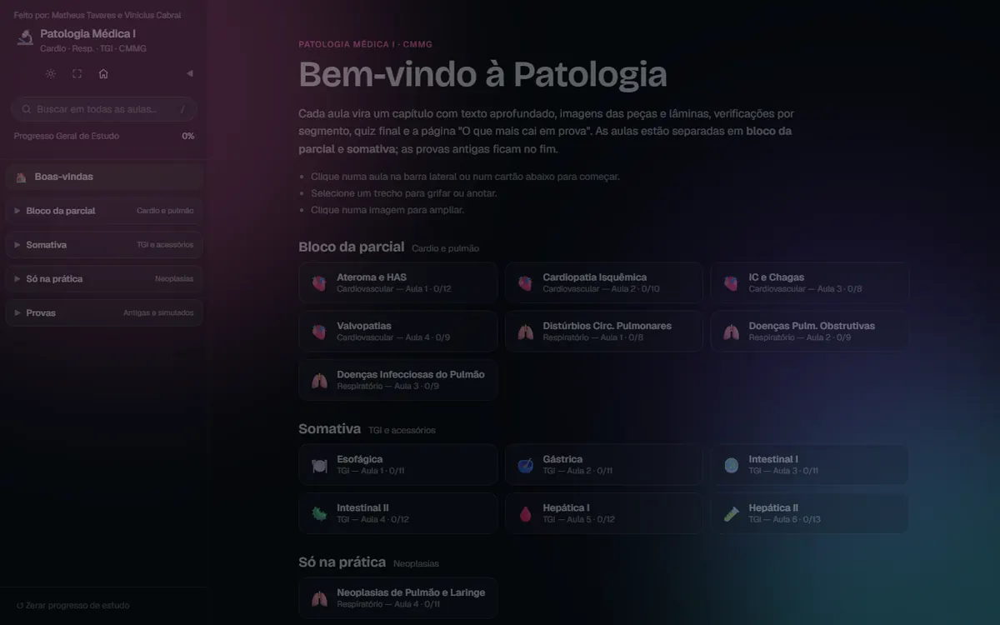
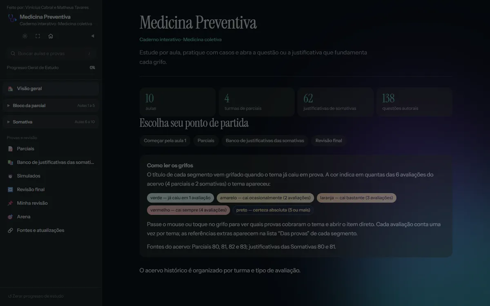

Medicina em masterclass
O que vamos estudar hoje?
As aulas de Medicina viraram masterclasses interativas: segmentos curtos, questões de prova comentadas e simulados. De aluno pra aluno.
Design by Vinícius Cabral · Masterclass by Matheus Tavares e Vinícius Cabral
Ninguém precisa de mais um PDF de 90 slides. Aqui cada aula vira uma masterclass: o que cai na prova, o porquê de cada resposta e questões pra testar se ficou.
6 matérias, 51 aulas
Tudo do 4º período, no ar agora. Role para conhecer cada uma: o modelo 3D muda junto. Mexa o mouse nele e clique para agitar.
Por dentro de uma masterclass





E ainda tem
- Página “O que mais é cobrado”
- Grifos e anotações que ficam salvos
- Busca em todas as aulas
- Modo claro e escuro, na cordinha da lâmpada
- Jogo 3D do corredor da OSCE
- Celular, tablet e PC
- Um meme secreto pra quem gabarita
Bora estudar?
Escolha o período e abra a primeira masterclass.
Design by Vinícius Cabral · Masterclass by Matheus Tavares e Vinícius Cabral
Qual período?
O 4º está no ar. Os outros vão acendendo conforme as masterclasses ficam prontas.
4º período
Seis matérias. Passe o mouse: a cápsula se abre, as bactérias perseguem o cursor, o coração acelera e as células morrem por apoptose. Clique para agitar.